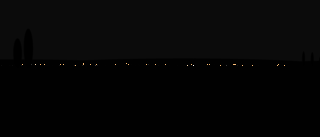
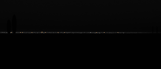
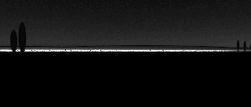
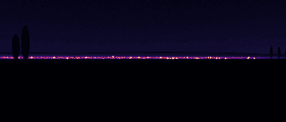
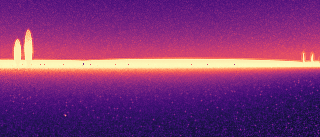
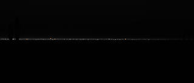
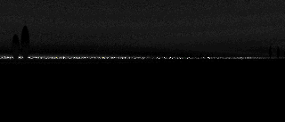
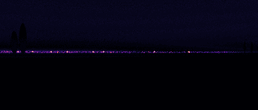
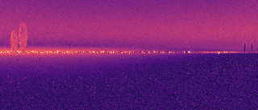

| reference | current | |diff| ×8 | LDR-FLIP (display) | HDR-FLIP (scene) | |
|---|---|---|---|---|---|
| vacuum: golden vs current LDR-FLIP mean 0.000000 HDR-FLIP mean 0.000000 scene max |d| 0 cd/m² |
 |  |  |  | |
| clear: golden vs current LDR-FLIP mean 0.000000 HDR-FLIP mean 0.000000 scene max |d| 0 cd/m² |
 | ||||
| mild: golden vs current LDR-FLIP mean 0.000000 HDR-FLIP mean 0.000000 scene max |d| 0 cd/m² |
 |  |  |  | |
| vacuum -> clear (for scale) LDR-FLIP mean 0.036639 HDR-FLIP mean 0.390233 scene max |d| 67.3691 cd/m² |
 |  |
 |  | |
| clear -> mild (for scale) LDR-FLIP mean 0.025117 HDR-FLIP mean 0.336122 scene max |d| 213.25 cd/m² |
 |  |  |
 |  |